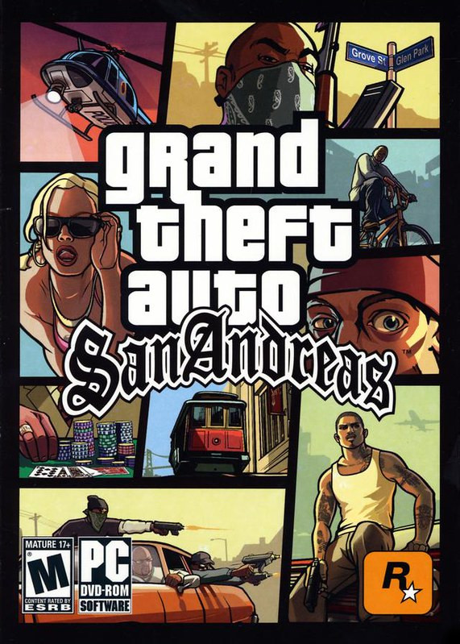

Uma das coisas que mais gosto de fazer em meu tempo livre é jogar Videogame. Nada melhor do que relaxar jogando algum jogo de mundo aberto, luta, RPG, futebol e etc... As opções sao infinitas.
A seguir vou listar uma sequencia de jogos que marcaram a minha infancia, e que ate nos dias atuais, eu continuo jogando:

GTA San Andreas é com toda a certeza um dos maiores jogos de todos os tempos. Lançado em 2004 pela Rockstar Games, Gta San, como é chamado aqui no Brasil, foi um jogo de mundo aberto revolucionario para os padrões da epoca. O jogo tinha otimos graficos, uma historia cativante, uma trilha sonora inesquecivel e diversas atividades para fazer pelo mapa, que contava com 3 cidades principais: Los Santos(los Angeles), San Fierro(San Frascisco), Las Venturas(Las Vegas). Esse Gta foi, sem sombra de duvida, uma marco na historia dos Games!
Pro Evolution Soccer 2013, ou apenas Pes 2013, é um jogo de futebol lançado no final de 2012 pela empresa de games Konami. Com uma jogabilidade divertida, varios clubes e campeonatos e varios modos interessantes e cativantes, o Pes 2013, pelo menos na minha opinião, é um dos classicos jogos de futebol e o melhor que já joguei. Alem de ser extremante divertido, este Pes foi lançado em momento no mundo do futebol em que tinhamos dois jogadores de um nivel extraordinario em seu auge, que eram Cristiano Ronaldo e Lionel Messi, o que torna o jogo ainda mais classico.
Resident Evil 4, ou apenas Re4, foi um jogo de ação/terror lançado em 2005 pela empresa de games Capcom. A franquia Resident Evil acomula diversos jogos classicos, como o Resident Evil 3, porem o Resident Evil 4 virou um jogo extremamente popular pela sua Gameplay cativante e divertida. Este, sem sombras de duvidas, é um dos jogos mais divertidos que já joguei, tendo zerado incontaveis vezes.
Estes foram alguns dos jogos mais classicos e divertidos que já joguei, e ainda jogo